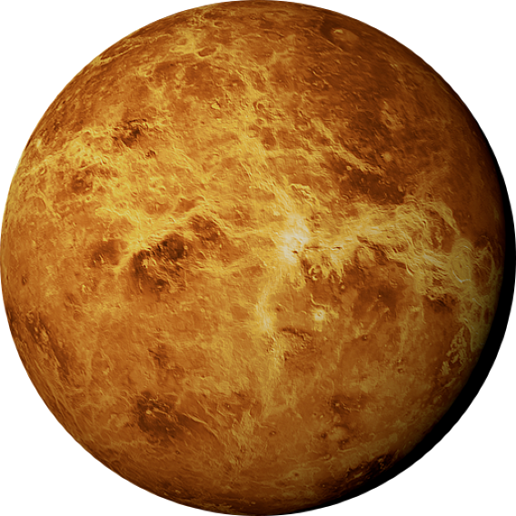

Венера
Вторая по удалённости от Солнца и шестая по размеру планета Солнечной системы. Названа в честь древнеримской богини любви Венеры.
радиус
6,051.8 км
спутники
Отсутствуют
тип планеты
планета земной группы
кольца
Отсутствуют
01
обзор
Древние люди наблюдали за Венерой невооруженным взглядом. Поскольку в определенные периоды расстояние между планетой и Землей составляет лишь несколько десятков миллионов километров, она четко виднеется на небе в виде белого пятна. Однако в то время не существовало технологий, позволяющих детально разглядеть загадочный объект. И люди наблюдали на небе утром и вечером лишь белое пятно, которое принималось за две разные звезды.
В 1032 году ученый Авиценн доказал, что Венера находится к солнцу ближе, чем Земля. Для этого он проследил ее путь по орбите в пределах видимости. Спустя примерно 600 лет Галилей установил фазы планеты и описал их
В 1761 году вклад в понимание устройства Венеры внес Михаил Ломоносов, обнаруживший на ней атмосферу. В 20-х годах прошлого века люди впервые исследовали небесное тело с помощью ультрафиолетовых лучей. К 60-ым годам у астрономов уже было четкое представление о свойствах планеты, которые расширились благодаря высадке космических аппаратов на ее поверхность.
02
Особенности
Венера имеет с землей много общего, из-за чего их часто называют сестрами. Венера лишь немного уступает Земле по размерам: ее диаметр составляет 95% от земного. Другие параметры также немногим ниже, чем у земли: ускорение свободного падения (90%), масса (81,5%), объем (85,7%), площадь поверхности (90%).
Но кроме сходства у Земли и Венеры немало отличий. У последней отсутствует конвекцияэто процесс передачи тепла в жидкостях и газах, при котором нагретые участки вещества поднимаются вверх, а охлажденные опускаются вниз ядра, магнитосфера не функционирует, из-за чего температура на поверхности гораздо выше. Атмосферное давление на второй планете в 93 раза больше, что также сказывается на климате. Не менее важным отличием является полное отсутствие воды, в то время как на Земле жидкости предостаточно.
солнечные сутки
117 земных суток
орбитальная скорость
35,02 км/с
температура поверхности
467 градусов Цельсия
03
Строение
Ученым довольно трудно изучать строение планеты, поскольку из-за высоких температур космические аппараты быстро выходят из строя. Используя сейсмометрыэто прибор, который используется для измерения сейсмических колебаний или землетрясений., они смогли получить некоторые данные о структуре Венеры.
Считается, что толщина поверхности составляет примерно 50 км, и основным веществом в ней является кремний. Далее начинается мантия, которая уходит вглубь примерно на 3000 км. До сих пор неизвестно, из чего она состоит, поскольку нет возможности сделать какой-либо анализ. В центре Венеры находится ядро из железа и никеля. Исследователи до сих пор гадают, является ли оно жидким или твердым.
Существенно в исследование строения планеты помогает тот факт, что она относится к земной группе, поскольку все ее представители обладают схожими свойствами.
04
атмосфера
Венера обладает самой плотной атмосферой среди планет Солнечной системы. На нижних слоях всегда имеется крупное скопление белых облаков. Из-за этого люди долгое время не могли узнать, как выглядит ее поверхность.
Большую часть атмосферы составляет двуокисьэто сокращенное название для углекислого газа, химическая формула которого CO2. углерода (96%). Остальной объем приходится на азот (3%) и серу (1%). Таким составом обуславливается высокая температура поверхности. Двуокись углерода вызывает сильный парниковый эффект, из-за чего температура на высоте до 2-3 км превышает 460 градусов Цельсия.